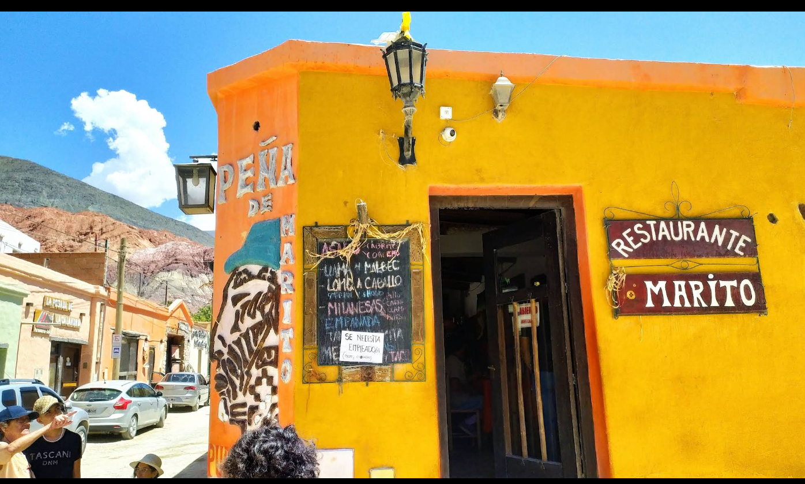

Sabores del Norte: Guía de Dónde Comer
Gastronomía andina destacada y peñas con música en vivo

1. Peña de Marito
Música folclórica en vivo, bombos y guitarras. Un ambiente lleno de color, arte y verdadera alegría norteña para disfrutar platos tradicionales.

2. Kuntur Resto Bar
Especialistas en cabrito a la parrilla y cazuelas regionales. Un rincón rústico con una vista privilegiada y excelente atención al turista.

3. El Algarrobo
Ubicado frente a la plaza principal. Destacado por ofrecer las empanadas jujeñas más auténticas, tamales y un locro pulsudo inolvidable.